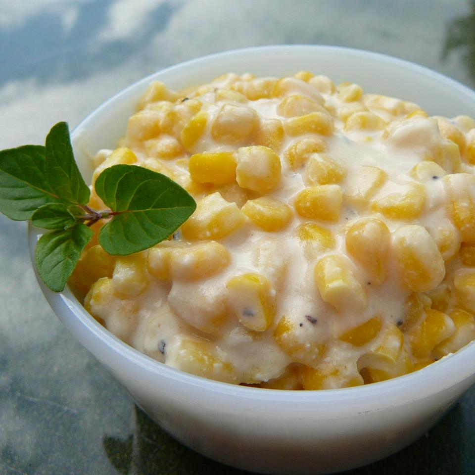

Slow Cooker Creamed Corn

A recipe for my favorite side: creamed corn
Seriously, I don't know how throwing cream and corn together is this good.
Ingredients
- 16 ounces frozen corn kernels
- 8 ounces cream cheese
- 1/2 cup butter
- 1/2 cup milk
- 1 tbsp sugar
- Salt and pepper to taste
Directions
- Combine corn, cream cheese, butter, milk, and sugar in a slow cooker. Season with salt and pepper to taste.
- Cook on Low for 4 to 6 hours or High for 2 to 4 hours.